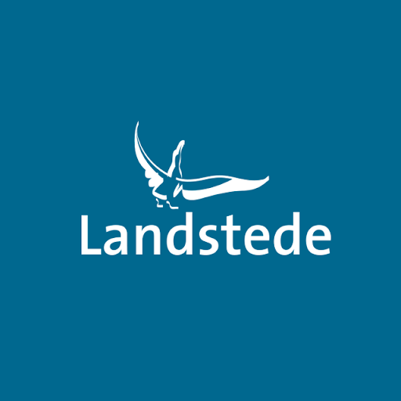
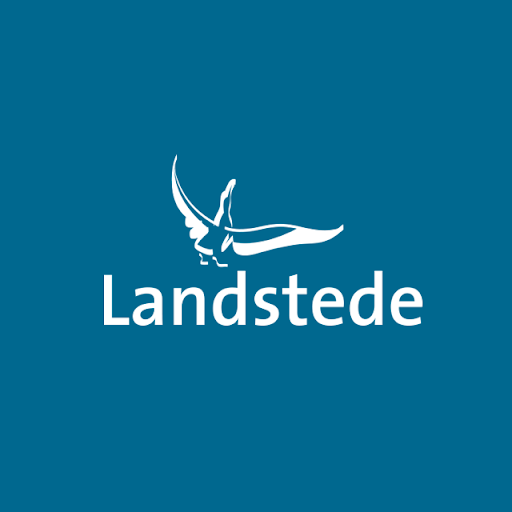

De eerste school waar ik heen ben gegaan was de peuterspeelzaal, na een jaar daarop gezeten te hebben ben ik naar de Princess Margriet school in Nijverdal gegaan.
Ik heb daar op gezeten voor 6 jaar, toen zijn de Prins claus school en mijn school samengevoegd dat maakte de Meander. Daar heb ik opgezeten voor 2 jaar van groep 7 tot groep 8.
Ik heb mijn CITO gemaakt en werd aangeraden voor Tl Havo. Ik heb gekozen om de TL opleiding te doen op de school Reggesteyn Willem de Clercq. Ik heb een fijne basisschool tijd gehad, en ben dankbaar voor mijn tijd op de Princess Margriet school.
Mijn middelbare school begon op Reggesteyn Willem de Clercq. Niveau TL (theoretische leerweg niveau 4) aan het begin was ik een slechte leerling, ik dacht dit word makkelijk en had alles onderschat en na een paar harde onvoldoendes wist ik dit moet anders! Dus ik begon met goed leren huiswerk maken en mijn cijfers gingen langzaam maar zeker omhoog.
Rond het midden van de eerste klas werd ik getest voor dyslexie, en na de test bleek dat ik inderdaad dyslexie heb. Met een beetje geluk heb ik de eerste klas gehaald, en bedacht bij mezelf ik ga niet weer zon jaar hebben dus begin al gelijk.
Tweede jaar derde jaar gingen ongeveer het zelfde. Maar het vierde jaar veranderede veel, ik moest een keuze maken voor mijn toekomst en dat wist ik heel goed.
Ik kreeg een uitnodiging van de school om naar een verzameling te gaan, daar waren allemaal opleidingen van verschillende scholen. Daar heb ik geleerd van programmeren en wat je er mee kunt doen. Ik was gelijk verkocht, mijn vierde jaar kwam bijna tot de eindexamen. Tot Corona kwam en ik hoefde geen eind examens te maken. Ik was geslaagd voor mijn TL diploma, en ging door naar Landstede Raalte.
Voor ik de opleiding Software Developer koos op landstede Raalte, had ik nog nooit een code geschreven maar naar het bezoek op Reggesteyn Rijssen en de open dag wist ik dit is wat voor mij! Ik heb de opleiding snel gekozen en heb me aangemeld bij Landstede Raalte. ik ben toegelaten en na het slagen en een rustige zomer vakantie door Covid-19, kon ik beginnen met het coderen.
Tot nu toe geniet ik van het code schrijven en wil graag meer leren! Om uiteindelijk iets te maken wat de mens,dier of planeet kan helpen voor een betere toekomst!
basisschool
Middelbare school
mbo